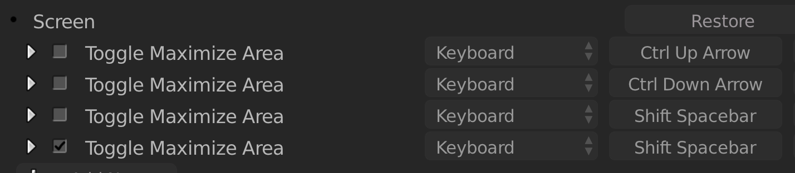
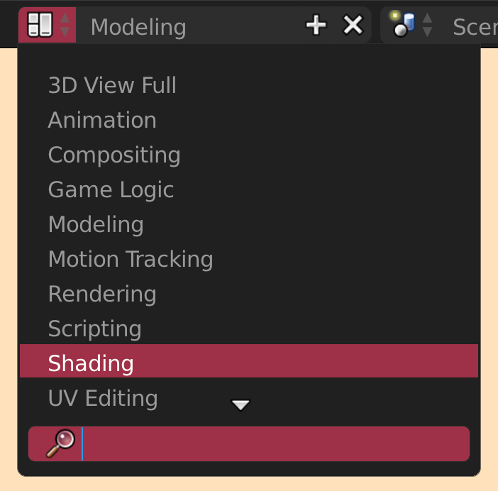
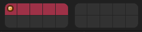

Since there are no workspace tabs in 2.7x, it can get very tedious rearranging your screens to maximize your workspace. This is why I have listed down some easy, fast to use and lazy tricks to always have a big workspace.
What these shortcurts do, is maximizing the window your cursor is in.
This sounds way techier than it is. Basically, this is the workspace feature of 2.7x. You can rearrange your screens to your liking and then save it as a layout and access it later.
This can be espacially useful to avoid clutter and confusion. For example: First layer only meshes, second layer the lighting and on the third layer your particle objects and so on. It is also very useful to have a trash layer to store your duplicated objects befor applying modifiers or something like that.
